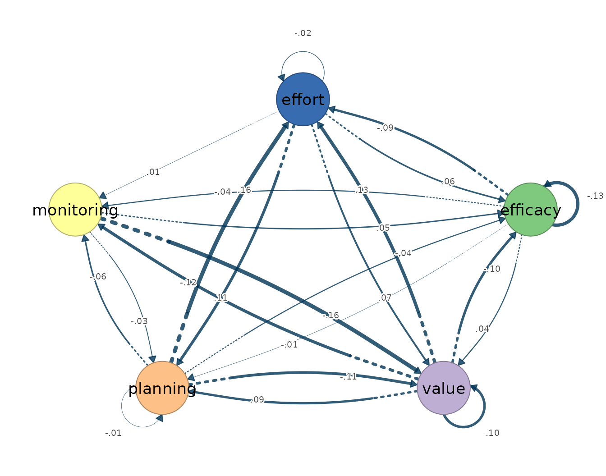

9. Stability and forecast validation
stability-and-forecasting.Rmd
library(idiographic)
data(srl)
vars <- c("efficacy", "value", "planning", "monitoring", "effort")
has_cograph <- requireNamespace("cograph", quietly = TRUE)Two complementary checks on a person’s model: how stable the
edge estimates are under resampling, and how well the model
predicts unseen occasions. Both operate on a single series, so
we select one student up front with subset().
grace <- subset(srl, name == "Grace")Edge stability
estimate_stability() resamples consecutive blocks of the
series and re-estimates, quantifying how reproducible each edge is.
stab <- estimate_stability(grace, vars = vars, estimator = "var",
resample = "block", n_resamples = 50, seed = 1)
stab
#> Idiographic Stability Result
#> Estimator: var
#> Resampling: block
#> Successful: 50 / 50
#> Edge rows: 35
#> Table: x$stability
#> Cograph: cograph::splot(x$original)
#> Matrices: matrices(x$original)The per-edge stability table is tidy — inspect the most-resampled
edges with head():
head(as.data.frame(stab))
#> network from to original mean sd
#> 32 contemporaneous efficacy effort -0.03471218 -0.06138485 0.03850128
#> 29 contemporaneous efficacy monitoring 0.37844327 0.37444453 0.04036469
#> 27 contemporaneous efficacy planning -0.05716168 -0.05072757 0.06506062
#> 26 contemporaneous efficacy value 0.06112069 0.09012899 0.10351524
#> 35 contemporaneous monitoring effort 0.46674337 0.45918333 0.06326628
#> 34 contemporaneous planning effort 0.33179869 0.33969015 0.08429987
#> q05 q50 q95 selection_prop positive_prop
#> 32 -0.12707866 -0.05853956 0.004229382 1 0.06
#> 29 0.31319758 0.37390544 0.451377578 1 1.00
#> 27 -0.14950165 -0.05326200 0.062486507 1 0.20
#> 26 -0.07402601 0.10022337 0.266852249 1 0.74
#> 35 0.35361969 0.46049412 0.559560568 1 1.00
#> 34 0.19990557 0.34915417 0.463231774 1 1.00
#> negative_prop n_success
#> 32 0.94 50
#> 29 0.00 50
#> 27 0.80 50
#> 26 0.26 50
#> 35 0.00 50
#> 34 0.00 50The original (point) estimate is stored and plots directly:
plot(stab, layer = "temporal")
Forecast validation
validate_forecast() checks one-step-ahead predictive
performance with a rolling origin. Reusing the same single-person
series, the validator splits it into consecutive blocks of
block_size occasions.
fc <- validate_forecast(grace, vars = vars, estimator = "var",
block_size = 10, initial = 8, n_splits = 5,
scale = TRUE)
fc
#> Idiographic Forecast Validation
#> Estimator: var
#> Successful: 5 / 5
#> Predictions: 250
#> RMSE: 0.9219
#> Tables: x$predictions | x$metrics | x$splitsPer-variable and overall error metrics come back as a tidy table:
fc$metrics
#> variable n mae rmse bias
#> 1 efficacy 50 0.7990649 1.0065234 -0.145731719
#> 2 value 50 0.7370324 0.9496895 0.136998547
#> 3 planning 50 0.6536071 0.8367760 0.110043981
#> 4 monitoring 50 0.7573315 0.9435326 -0.174603486
#> 5 effort 50 0.6903039 0.8626040 0.054242302
#> 6 .overall 250 0.7274680 0.9219038 -0.003810075The full one-step prediction record is available with
as.data.frame():
head(as.data.frame(fc))
#> split original_row subject day beep variable observed predicted
#> 1 1 2109 1 1 2109 efficacy 0.3112716 -0.14593698
#> 2 1 2110 1 1 2110 efficacy -0.2261758 -0.06000134
#> 3 1 2111 1 1 2111 efficacy -0.4053249 0.09462312
#> 4 1 2112 1 1 2112 efficacy -1.8385181 0.09215171
#> 5 1 2113 1 1 2113 efficacy -0.9427724 0.40950791
#> 6 1 2114 1 1 2114 efficacy 0.1321225 0.08746060
#> residual abs_error squared_error
#> 1 0.4572086 0.4572086 0.209039716
#> 2 -0.1661744 0.1661744 0.027613946
#> 3 -0.4999480 0.4999480 0.249948051
#> 4 -1.9306698 1.9306698 3.727485745
#> 5 -1.3522803 1.3522803 1.828661898
#> 6 0.0446619 0.0446619 0.001994685